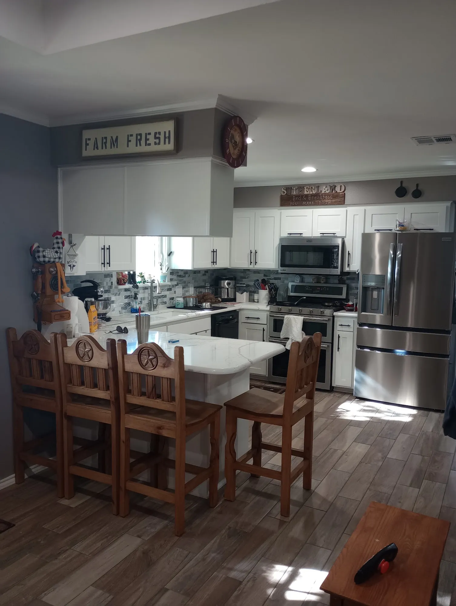

Our work · project photos
Rooms that speak for themselves.
Every photo here comes from H&T Custom Interiors’ Google listing: finished kitchens, baths and built-ins, plus a few shots from mid-build.

Featured
Drag through the highlights.
Drag, swipe or scroll sideways. Tap any photo to open it.
The full portfolio
Filter by room.
Photos from the H&T Custom Interiors Google listing. One reflection in a bathroom mirror was blurred for privacy.

Talk to the shop
Picture your room here.
Tell them what you have in mind. A quick call is the best place to start.
(940) 456-3734Mon–Fri 8 AM–6 PM CT